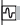
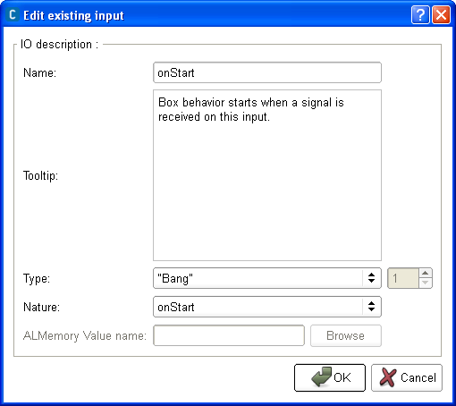
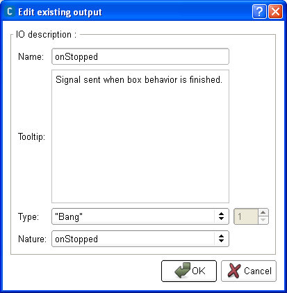

Box - Inputs/outputs¶
Input of a box¶
They are several natures of inputs. Some are only accessible from the inside of the box (from its diagram or its Timeline), some only from outside (from the parent diagram) and some from both.
To activate those which are available from the outside of the box, you have to connect them to either the main input of the diagram, or the output of a box.
The others are automatically activated when a special event is raised.
The picture displayed on an input depends on its nature:
| On the box | Within the
box diagram
|
Nature |
|---|---|---|

|
onStart: When this input is stimulated, the box is started. | |
onStop: When this input is stimulated, the box is stopped. This input is only visible outside the box (not within the diagram of the box) as it automatically stops everything within the diagram. |
||
onEvent: This input has no specific effect on the box, it does not start nor stop it. When it is stimulated:
|
||
|  | ALMemory Input: This special type of input is only visible within the diagram. So you cannot stimulate it from the outside of the box. It is stimulated every time the value of the data stored in ALMemory corresponding to this input is updated and an event is raised to tell that it has been updated. Note that these inputs are only active when the diagram is loaded. To have an example of use of this type of input, see the tutorial Creating a box to retrieve right bumper value using ALMemory. |
|
| onLoad: This type of input is only visible within the diagram and when the box is a Timeline. So you cannot stimulate it from the outside of the box. It is only stimulated when the box diagram has been loaded. |
Note
All these special natures of inputs have no special effect on a script box as it has no flow diagram nor Timeline. For those accessible from the outside of the box, the onInput_<input_name> function of the box script is just called.
Output of a box¶
They are several natures of outputs.
You can stimulate them either from the diagram or the Timeline or the script of the box.
To stimulate it from the diagram or the Timeline of the box, you need to connect it to a sub-box output.
To stimulate it from the script of the box, you need to call its corresponding method. For more information about this corresponding method, see the section: Built-in functions in the script of a box.
The picture displayed on an output depends on its nature:
| On the box | Within the
box diagram
|
Nature |
|---|---|---|

|
onStopped: When this output is stimulated (from the script or from the diagram), the box is stopped. | |
| punctual: This output has no specific effect on the box, it does not start nor stop it. When it is stimulated, the signal received on the output is transmitted to the parent diagram. |
Type of I/O (input/output)¶
The communication between boxes is event based, so a simple event signal can be sent from one box to another. But the signal can also carry information (such as a string, a number, an array...).
Then an important thing you need to know about I/O is that the color of an I/O depends on the type of the data it carries.
Here is a table gathering all types of I/O with their corresponding color:
| Input | Output | Type |
|---|---|---|
| Bang: Represents an simple event. This type of I/O does not carry any data with it, only the information that it is stimulated. | ||
| Number: Represents an event carrying a data. This data is either a number (float or int) or an array of numbers. | ||
| String: Represents an event carrying a data. This data is either a string or an array of strings. | ||

|
Dynamic: Represents either a simple event (as the Bang type) or an event carrying a data. This data (if any) is either a number (float or int), a string or an array of numbers, strings and arrays. |
Depending on their type, it is not always possible to connect two I/O: the information the output sends has to be understandable by the input.
Note
You can connect any type of I/O to a Bang input. The data sent will then be lost and will only be understood as a simple event.
Input, and output edition widgets¶
When you create or edit an box input, the following widget is displayed:
You can here set:
the name of the input.
the brief description of what is done when this input is stimulated in the field Tooltip.
Note
This description will appear in a tooltip displayed by passing above the input in the flow diagram.
the type of data expected by this input in the field Type: Dynamic, “Bang”, Number or String. For further details about these types, see the section: Type of I/O (input/output).
You can also choose the nature of the input: onEvent, onStart, onStop or ALMemory Input. For more information about these natures, see the section: Input of a box.
If the input is an ALMemory input, you will be able to choose which value from ALMemory the input will be connected to.
Note
You need to be connected to a robot if you want to browse the list of available values.
When you create or edit an box output, you get a very similar widget:
But you have no field ALMemory Value name and the available nature of outputs are different: onStopped or punctual. For more information about these natures, see the section: Output of a box.